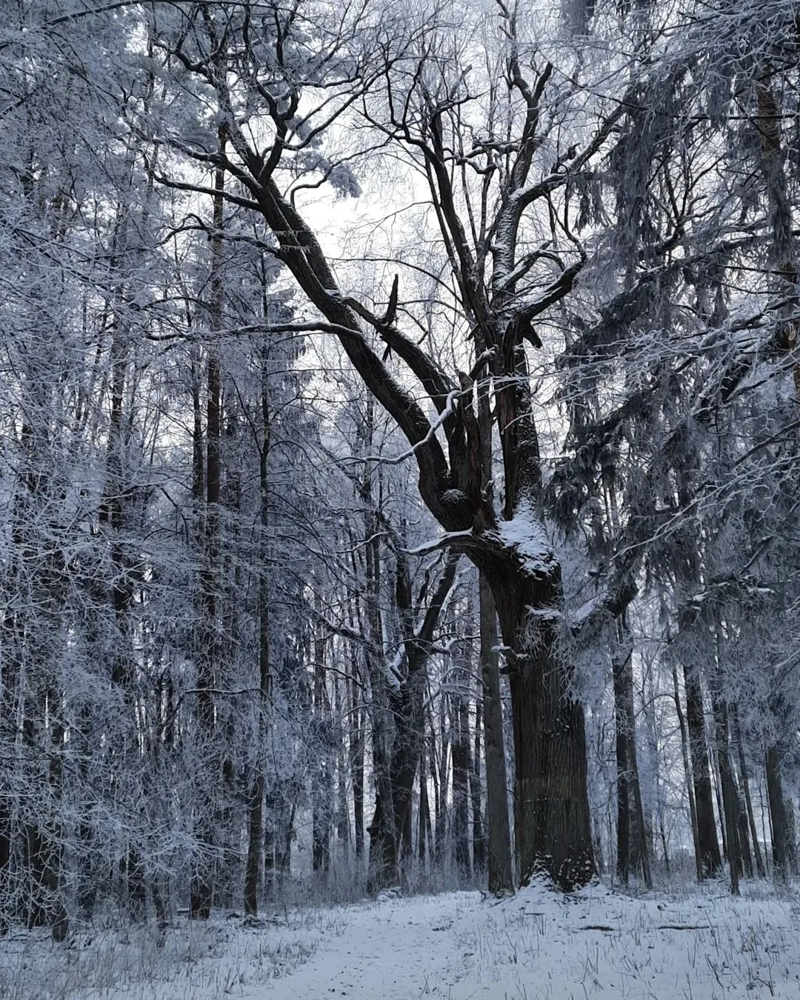
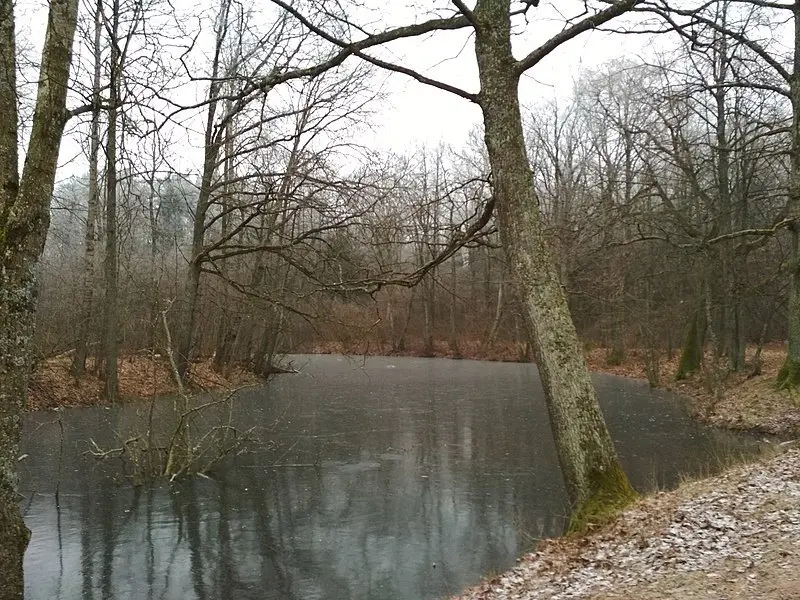
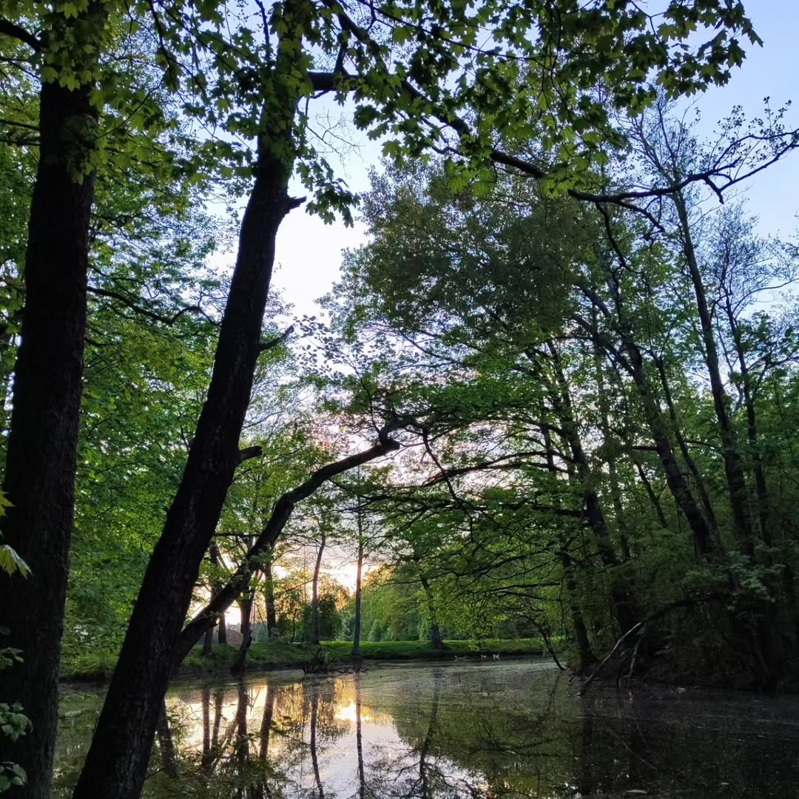
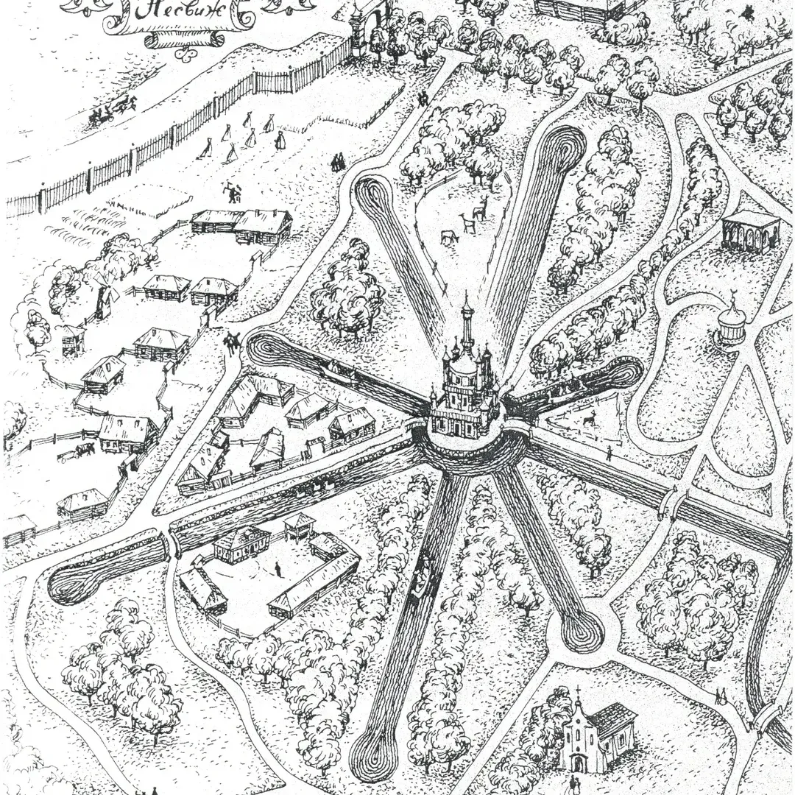

ГалереяГалерэя
Альба сегодняАльба сёння




Парк Радзивиллов XVI века, первый зоопарк Беларуси и старейшая парковая аллея страны. Заброшен, но не забыт. Парк Радзівілаў XVI стагоддзя, першы заапарк Беларусі і найстарэйшая паркавая алея краіны. Закінуты, але не забыты.
Помочь парку Дапамагчы парку

Один из восьми каналов, заложенных в XVIII векеАдзін з васьмі каналаў, закладзеных у XVIII стагоддзі
О паркеПра парк
Пока все едут смотреть на замок Радзивиллов, в трёх километрах скрывается Альба — загородная резиденция тех же Радзивиллов, заложенная в конце XVI века.Пакуль усе едуць глядзець на замак Радзівілаў, за тры кіламетры хаваецца Альба — загарадная рэзідэнцыя тых самых Радзівілаў, заснаваная ў канцы XVI стагоддзя.
Здесь был первый зоопарк Беларуси с леопардами и обезьянами. Здесь шили знаменитые Слуцкие пояса. Здесь 800 тысяч ламп зажгли в честь приезда последнего короля Речи Посполитой.Тут быў першы заапарк Беларусі з леапардамі і малпамі. Тут ткалі знакамітыя Слуцкія паясы. Тут 800 тысяч лямпаў запалілі ў гонар прыезду апошняга караля Рэчы Паспалітай.
Сегодня от дворцов остались лишь фундаменты. Но восемь каналов, расходящихся звездой, до сих пор видны из космоса. И вековые дубы всё ещё стоят.Сёння ад палацаў засталіся толькі падмуркі. Але восем каналаў да гэтага часу відаць з космасу. І вякавыя дубы ўсё яшчэ стаяць.
Четыре эпохиЧатыры эпохі
Николай Радзивилл Сиротка разбивает парк в итальянском стиле. Первый зоопарк с леопардами. Архитектор — Бернардони, тот же, кто строил Фарный костёл.Мікалай Радзівіл Сіротка закладае парк у італьянскім стылі. Першы заапарк з леапардамі. Архітэктар — Бернардоні, той самы, хто будаваў Фарны касцёл.
После шведского разрушения — второе рождение. Мануфактура золотых поясов, оранжереи с апельсинами, зелёные театры под открытым небом.Пасля шведскага знішчэння — другое нараджэнне. Мануфактура залатых паясоў, аранжарэі з апельсінамі, зялёныя тэатры.
Пане Коханку прокладывает 8 каналов звездой. Копия Святой Софии на острове. В 1784 году в честь короля зажгли 800 000 ламп.Пане Каханку пракладвае 8 каналаў зоркай. Копія Сафіі на выспе. У 1784 годзе запалілі 800 000 лямпаў.
Волонтёры расчищают аллеи и каналы. Вековые дубы стоят. Каналы видны из космоса. Парк ждёт тех, кто о нём расскажет.Валанцёры расчышчаюць алеі і каналы. Вякавыя дубы стаяць. Каналы відаць з космасу.
ГалереяГалерэя


Интересные фактыЦікавыя факты
В 1580-х Радзивилл Сиротка привёз леопардов, бабуинов и попугаев. Возможно первый зоопарк в Восточной Европе.У 1580-х Радзівіл Сіротка прывёз леапардаў, бабуінаў і папугаяў. Магчыма першы заапарк ва Усходняй Еўропе.
Знаменитая мануфактура золотых поясов начиналась здесь. Позже перенесена в Слуцк. В каждом поясе — 200 г чистого золота.Знакамітая мануфактура залатых паясоў пачыналася тут. Пазней перанесена ў Слуцк. У кожным — 200 г чыстага золата.
В 1784 году в честь короля Станислава Августа всю дорогу от замка до Альбы осветили 800 тысячами ламп. Фейерверк — час.У 1784 годзе ў гонар караля ўсю дарогу асвятлілі 800 тысячамі лямпаў. Фейерверк доўжыўся гадзіну.
Суслики из зверинца XVI века сбежали и расплодились по всему Несвижскому району. Фермеры считали их настоящим бедствием.Суслікі са звярынца XVI стагоддзя размножыліся па ўсім Нясвіжскім раёне і сталі бядой для фермераў.
Восемь каналов звездой от круглого острова до сих пор видны на спутниковых снимках. Прокопаны вручную в XVIII веке.Восем каналаў зоркай да гэтага часу відаць на спадарожнікавых здымках. Выкапаны ўручную ў XVIII стагоддзі.
Главная аллея парка — старейшая парковая аллея страны. По ней ходили Радзивиллы и прошли войска трёх завоевателей.Галоўная алея — найстарэйшая паркавая алея краіны. Па ёй хадзілі Радзівілы і прайшлі войскі трох заваёўнікаў.
Волонтёрский проектВаланцёрскі праект
С 2020 года энтузиасты расчищают парк своими силами. Каждый субботник — несколько метров возвращённых аллей и очищенных каналов.З 2020 года энтузіасты расчышчаюць парк уласнымі сіламі. Кожны суботнік — гэта некалькі метраў вернутых алей.
Как добратьсяЯк дабрацца